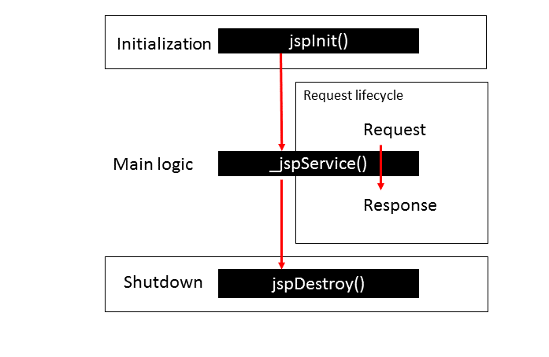

Lifecycle of JSP
JSP life cycle is also managed by container. Usually every web container that contains servlet container also contains JSP container for managing JSP pages.The key to understanding the low-level functionality of JSP is to understand the simple life cycle they follow.
A JSP life cycle can be defined as the entire process from its creation till the destruction which is similar to a servlet life cycle with an additional step which is required to compile a JSP into servlet.
* JSP pages life cycle phases are:
Translation - JSP pages do not look like normal java classes, actually JSP container parse the JSP pages and translate them to generate corresponding servlet source code. If JSP file name is javat.jsp, usually it is named as javat_jsp.java.
Compilation - If the translation is successful, then container compiles the generated servlet source file to generate class file.
Class Loading - Once JSP is compiled as servlet class, its lifecycle is similar to servlet and it gets loaded into the memory.
Instance Creation/Instantiation - After JSP class is loaded into memory, its object is instantiated by the container.
Initialization - The JSP class is then initialized and it transforms from a normal class to servlet. After initialization, ServletConfig and ServletContext objects become accessible to JSP class.
Request Processing - For every client request, ServletRequest and ServletResponse to process and generate the HTML response, is invoked by the container.
Destroy - Last phase of JSP life cycle where it is unloaded from the memory.
* JSP lifecycle methods are:
jspInit() declared in JspPage interface. This method is called only once in JSP lifecycle to initialize config params.
_jspService(HttpServletRequest request, HttpServletResponse response) declared in HttpJspPage interface and response for handling client requests.
jspDestroy() declared in JspPage interface to unload the JSP from memory.

So, JSP page is translated into servlet by the help of JSP translator. The JSP translator is a part of web server which is responsible for this translation into servlet. After that, Servlet page is compiled by the compiler and gets converted into the .class file. Moreover, all the processes that happen in servlet are performed on JSP later like initialization, committing response to the browser and destroy.
JSP Compilation and Translation
When a browser asks for a JSP, the JSP engine first checks to see whether it needs to compile the page. If the page has never been compiled, or if the JSP has been modified since it was last compiled, the JSP engine compiles the page.
During the translation phase each type of data in a JSP page is treated differently. Static data is transformed into code that will emit the data into the response stream.
JSP Initialization
Typically initialization is performed only once and as with the servlet init method, you generally initialize database connections, open files, and create lookup tables in the jspInit method.
JSP Execution
Whenever a browser requests a JSP and the page has been loaded and initialized, the JSP engine invokes the _jspService() method in the JSP.
JSP Destroy
The jspDestroy() method is the JSP equivalent of the destroy method for servlets. We can override jspDestroy when space clean up is to be done, such as releasing database connections or closing open files.